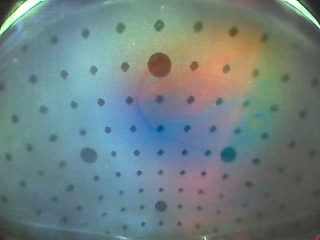
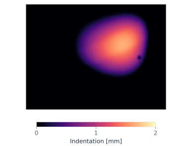
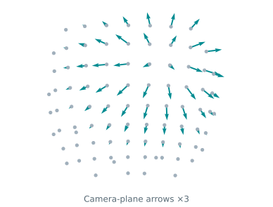
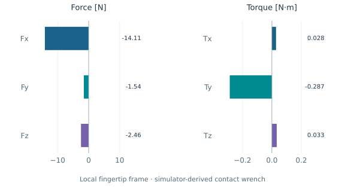
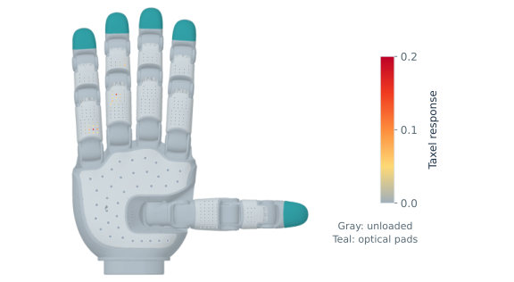
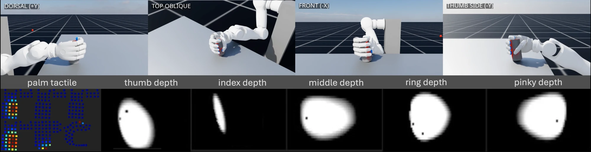

01 / OPTICAL APPEARANCE
RGB
The tactile camera’s view of contact, rendered from indentation using GPU-Taxim and a real no-contact background.
240 × 320 · 3 color channels per fingertip
WHOLE-HAND TACTILE SIMULATION
Scalable Multimodal Tactile Simulation
for Dexterous Manipulation
1 HKUST(GZ)2 BrainCo3 Georgia Tech
01 / TACTILE MODALITIES
RevoSim brings two sensor families into one simulator: visuotactile sensing at the five fingertips, and piezoresistive sensing across the palm and finger pads. They capture different aspects of contact.
All five examples share the same simulation frame from RevoBench, Cup grasp task · right ring fingertip · t = 53.183 s

01 / OPTICAL APPEARANCE
The tactile camera’s view of contact, rendered from indentation using GPU-Taxim and a real no-contact background.
240 × 320 · 3 color channels per fingertip

02 / CONTACT GEOMETRY
How far the fingertip surface is indented, and where. The heatmap displays a metric depth field; the recorded values are in meters.
240 × 320 · one depth value per pixel

03 / SURFACE DEFORMATION
Local 3D displacement at calibrated surface markers. The arrows show the camera-plane projection, enlarged threefold for visibility.
100 × 3 · fixed marker slots with validity masks

04 / RESULTANT CONTACT LOAD
Three forces and three torques in the fingertip’s local frame. RevoBench computes this contact wrench from normal and friction contact records, with moments about the pad origin.
Fx, Fy, Fz [N] · Tx, Ty, Tz [N·m]

05 / DISTRIBUTED HAND CONTACT
Scalar responses over the palm and finger pads. These taxels cover different regions from the optical fingertips, revealing contact across the hand.
285 taxels · 11 regions per hand
RGB, depth, and markers describe local fingertip contact in different forms. The 6D wrench summarizes the resultant load; distributed pressure preserves where the hand makes contact.
Reading the examples. Pressure is a nonnegative, unitless sensor response. The hand is shown in a fixed reference pose; finger taxel arrays are aligned and arranged within the pads for readability.
RGB and marker displacement are separate outputs; the plotted vectors do not warp the RGB image. The 6D example is a simulator-derived contact wrench.
02 / THE FRAMEWORK
RevoSim models the BrainCo Revo3 hand in Isaac Lab. Geometry-aware taxel responses and adaptive fingertip sampling produce aligned tactile observations for simulation-based robot learning.
Object penetration drives each taxel’s calibrated response. Diffusion follows the curved sensing surface, accounts for surface normals, and preserves the total response.
A coarse 32 × 24 map localizes contact. A 25 × 40 sampling lattice tracks that region, then reconstructs a dense 240 × 320 fingertip observation.
Depth drives the RGB renderer and marker dilation. A temporal shear model contributes tangential deformation at 100 calibrated marker locations per fingertip.

The paper studies in-hand manipulation and grasping in simulation. These experiments provide a foundation for future sim-to-real transfer.
03 / SCALABILITY
Measurements on one NVIDIA RTX 5090. Memory use depends on the selected observations; the largest reported configuration excludes RGB.
4,096
Depth-conditioned marker displacement at 31.36 GiB, with RGB excluded.
9.2 GiB
Compared with TacMap’s 30.6 GiB in the paper’s depth-only benchmark.
~70%
At 1,024 environments in that comparison. These figures measure memory capacity.
Adding RGB increases memory use. The cumulative setting with depth, pressure, markers, and RGB reaches capacity at 1,024 environments in the reported benchmark.
04 / DATA COLLECTION
RevoSim supports data collection in the LeRobot dataset format. The demonstrations below show manipulation together with camera views, whole-hand pressure, fingertip observations, and recorded trajectories.
Multi-view manipulation with fingertip sensing and whole-hand pressure.
Download videoAdditional task comparisons and tactile evaluation results will be added as they become available.